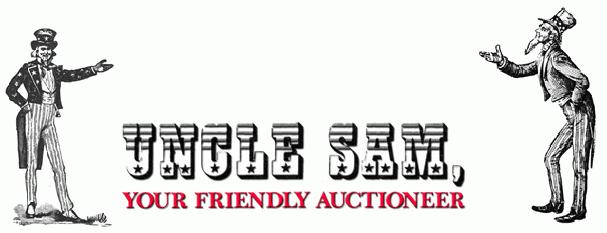
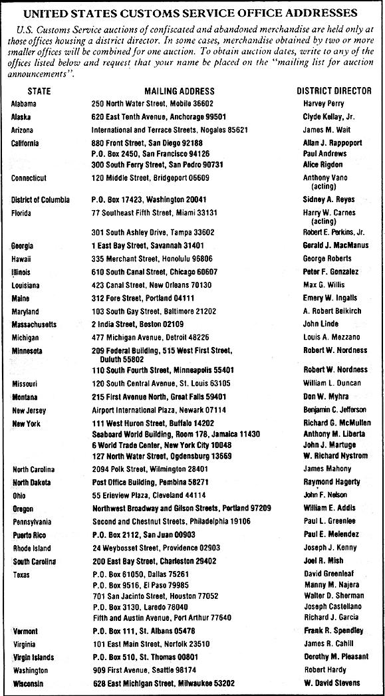

For the lowest possible prices on high-quality imported merchandise, you can visit...
Would you be interested in buying a spanking new Kodak Instamatic camera for less than 18d? Or how about a still-in-the carton power lawn mower for under $21?
Well, believe it or not, those two super hot deals-along with a lot more that were at least as good-were scooped up by smart buyers who took advantage of one of Uncle Sam's better ideas . . . the United States Customs Service (USCS) auctions of abandoned and confiscated merchandise.
You see, the vigilant folks at the USCS (part of the U.S. Treasury Department) amass millions of dollars' worth of abandoned and forfeited import goods every year . . . and most of that merchandise is new. Of course, all this loot requires expensive warehousing and record-keeping, so Uncle prefers to sell it sometimes almost giving it away-rather than let it pile up on him.
And (naturally!) that's where you enter the picture.
If you're a struggling small-business person searching for budget-priced quality inventory, an entrepreneur shopping for a fast profit, or a consumer just looking for bargains on items for your personal use, then read on. I'm about to tell you how to take advantage of these fantastic government sales . . . what kinds of goodies you can expect to find at them . . . how to know when the next customs auction will take place in your neck of the woods . . . and the kind of prices you'll probably pay if you decide to do business with the federal auctioneers.
GETTING YOUR FOOT IN THE (WAREHOUSE) DOOR
There are 45 regional customs offices scattered around the U.S., including one each in Puerto Rico and the Virgin Islands. Auctions can be held at any of these 45 locations, but two or more regional offices will often pool small stocks in order to stage one large, combined sale.
To be eligible to participate in any of these USCS inventory reductions, you must have your name placed on their mailing/registration list . . . and it's necessary to renew your spot there each year, because the agency won't continue to send out announcements to folks who've moved or lost interest during the preceding year. Fortunately, it's easy enough to get on the list: Simply send a written request to the district director of the customs office nearest you (you can find the address in the accompanying chart). You may also wish to get on the mailing lists of such offices located in other parts of the country . . . and then submit mail-in bids on items that strike your fancy.
Customs sell-offs are often held monthly at some of the larger U.S. entry ports . . . such as New York City and San Pedro, California. Or, at the smaller regional offices, they may be staged as infrequently as once a year. When a customs district director decides to hold an auction, he or she is required by law to publish its date and location in the public press. And, about the same time that a newspaper announcement appears, you will-if you're on the USCS bidder list-receive notification by mail.
Sometimes, these auction mail-outs will contain only an alphabetical listing of the items to be offered for sale. But on other oc casions, you'll receive a detailed "catalog" that gives a good description of the merchandise available, notes the quantities of each lot, and even provides information on the appraised retail value of the goods! (Occasionally, when these catalogs are of an unwieldy size, you'll get only a notice telling you to come to the customs office to pick up your copy a few days before the auction.)
RULES OF THE GAME
There's nothing really difficult or tricky about becoming a buyer of customs booty. When you receive your first announcement of an upcoming sale, it'll contain the information you'll need to take the next step: looking over the merchandise before it goes on the block. Usually, the inspection period will be a day or so before the auction.
Naturally, there are a few requirements you should be familiar with before jumping headlong into the bidder-versus-bidder game. First, all merchandise is sold strictly "as is", with no guarantees of either quality or monetary worth (the appraised values are just that . . . appraisals). Second, unless you can clear your personal or business check with the district director's office ahead of time, you'll have to pay in cash. And third, you must take possession of your purchases within five days of the auction, or arrange to have the government continue to store them at your expense after the sale. If you don't make storage arrangements, or cart away your buys within 30 days, Uncle will reclaim them and resell them at the next auction . . . and you'll lose your money.
But, all in all, those stipulations seem fair enough, considering the bargain-basement prices you'll likely be paying in the first place. And, to help balance things out, all sales are duty-free!
WHAT AM I BI D . . . ?
I've dug up a few examples of the types and prices of items available at an average U.S. Customs Service auction . . . in order to illustrate the incredible selections regularly offered. Consider, if you will, these deals that lucky buyers made at a recent sale in Tampa, Florida:
Four name-brand ten-ton air conditioners sported a total appraised value of $12,000 . . . and were hauled off by a happy buyer who paid only $4,300. Knives with cases, numbering 1,560 and valued at $7,080, went to the sharpest bidder for less than a quarter of that amount. A number of straw hats, with a total retail value of $535, changed hands for only $125. And remember that individual who picked up the 18Q Kodak Instamatic camera? Well, to get that price, the bargain hunting shutterbug had to buy 63 of the little picture boxes.
And it'll probably whet your auctioning appetite still more to know that the announcement for the June 1983 customs auction held in Miami, Florida listed 113 separate categories of goods . . . including automobiles, aircraft parts, canned fruit, cloth, dolls, die sets, fishing line, handicrafts, hammocks, ladders, leather goods, optical lenses, ponchos, phonograph records, rum, shirts, shoes, tires, tools, toys, wine, watches, wigs, and (whew!) to cap it all off, yarmulkes.
Want to hear more? OK, the June 1983 sale at the Savannah, Georgia customs center included 187 groups (or "lots") of assorted goodies. Among them were 480 automobile fuel filters, 12,000 knit sweaters
(carrying an appraised value of $304,000!), 11 cases (5,500 pieces in total) of surgical instruments, several cartons of women's shoes, and a portable cement mixer.
As if that's not enough to set any bargain hunter's pulse to racing, I might also mention that, at the same Georgia auction, you could have bid on sundry items such as burlap, steel pipe, carvings, vacuum pumps, ceiling fans, seashells (enough of them to open your own store!), seeds, bicycle parts steel plates, frozen catfish fillets, bras; goods, computer parts . . . and even a 1956 Jaguar!
UNCLE SAM WANTS YOU!
As you can see by glancing over the ac companying list of USCS regional offices. you don't have to live on one of the coasts to get in on this incredible opportunity to save (and make!) money: There are customs locations scattered throughout several inland sections of this country as well. And the number of competing bidders will sometimes be so low that you'll have a good chance of walking away with the items you bid on, no matter how ridiculously low your offers might seem to be.
So don't waste any time in contacting your nearest USCS office to get your name put on the mailing/registration rolls. Then, when the first auction announcement arrives, give it a good look-see for items you might be able to sell through your business, wholesale to someone else for a quick profit, or put to other use. If you spot anything that looks interesting, scurry on down to the customs office for an on-site inspection at the appointed time. And finally, show up on auction day-or submit a mail-in bid if the sale isn't in your neighborhood-and do your darndest to land the buys that tug at your fancy.
Obviously, individuals who have access to retail or wholesale outlets for large lots of merchandise will benefit the most from government sales. But I've found that something will almost always turn up that makes my participation well worth the effort. After all, who am I to pass up a super-savings deal from my favorite Uncle?
|
 |
 |
|